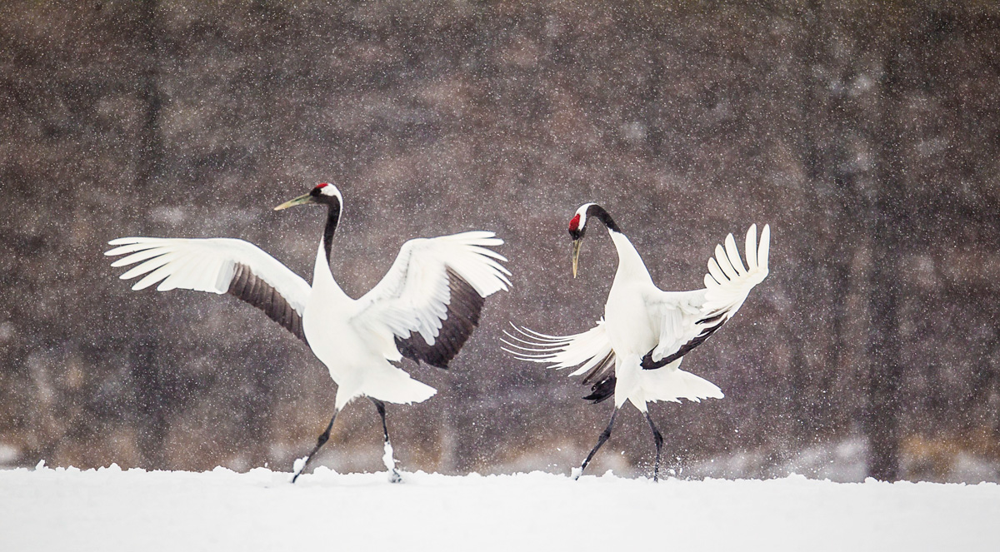
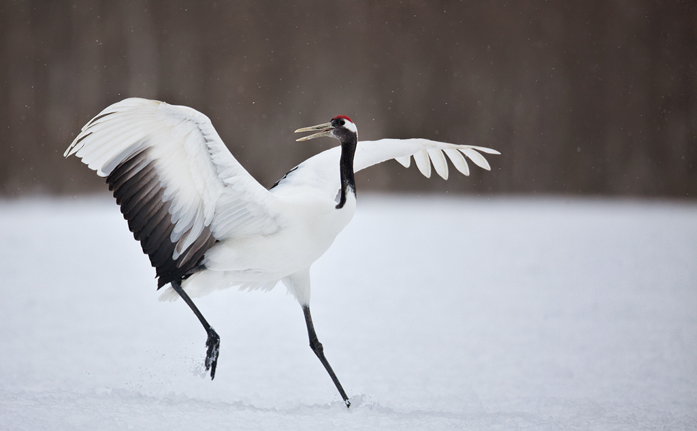
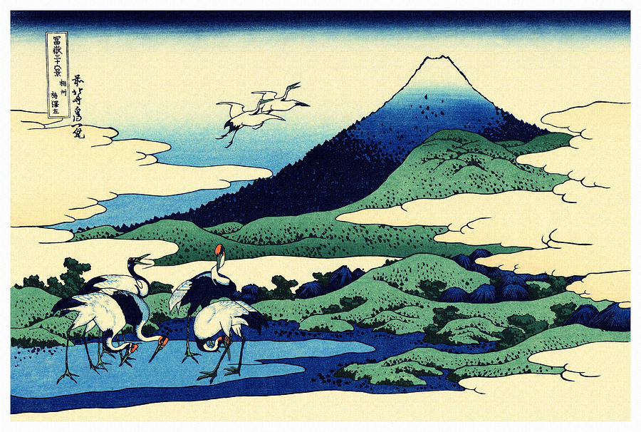
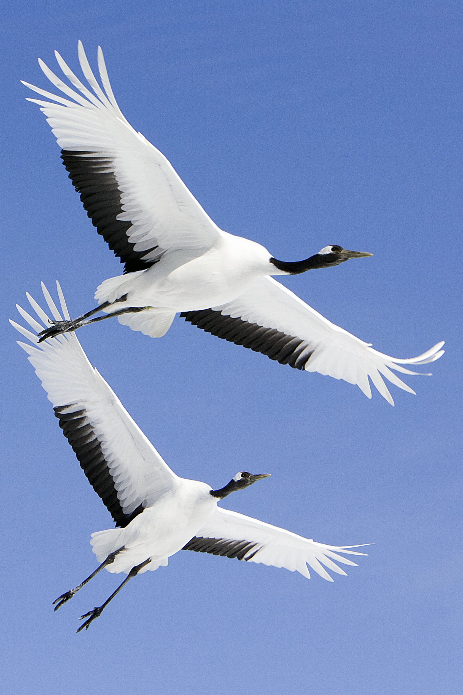
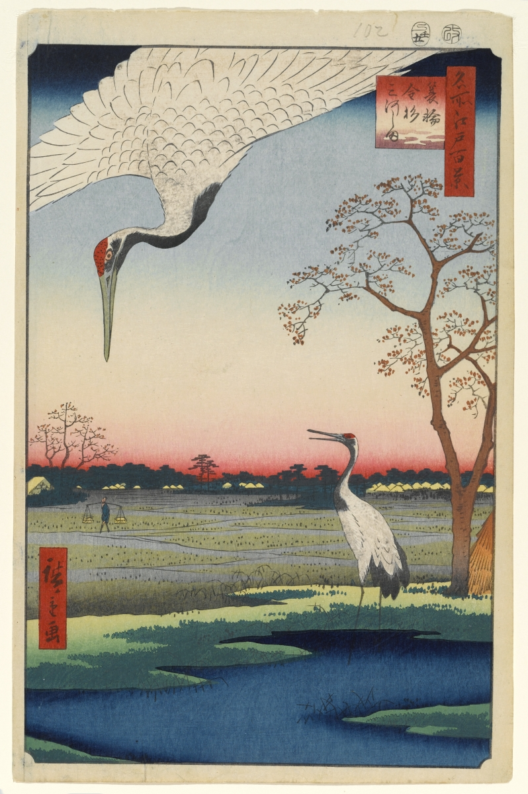
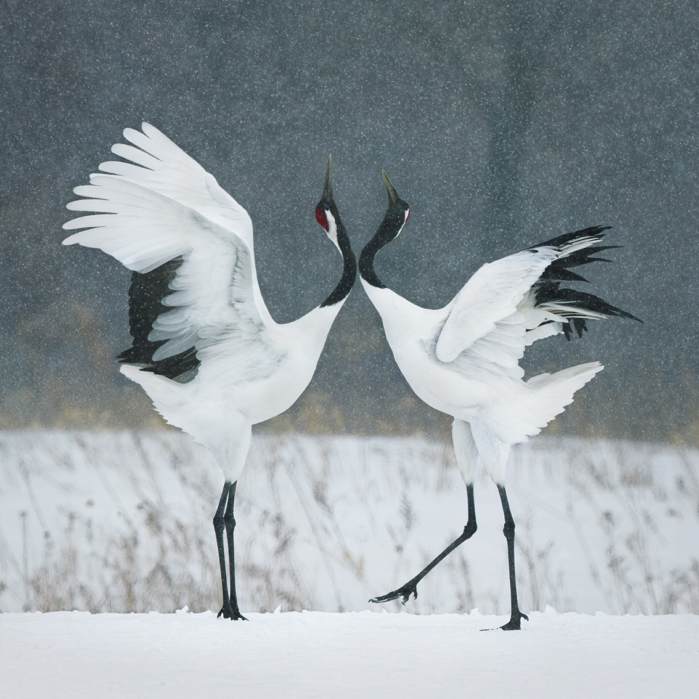

In Japan, this crane is known as the tanchōzuru and is said to live for 1,000 years. A pair of red-crowned cranes was used in the design for the Series D 1000-yen note (reverse side). In the Ainu language, the red-crowned crane is known as sarurun kamuy or "marsh-kamuy". The image of red-crown crane is often used in different forms of art works.
 

  